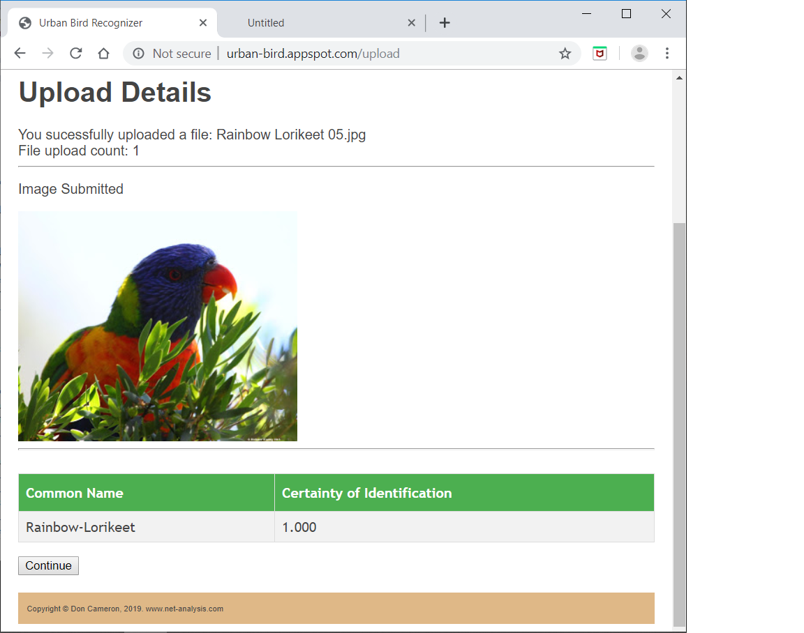
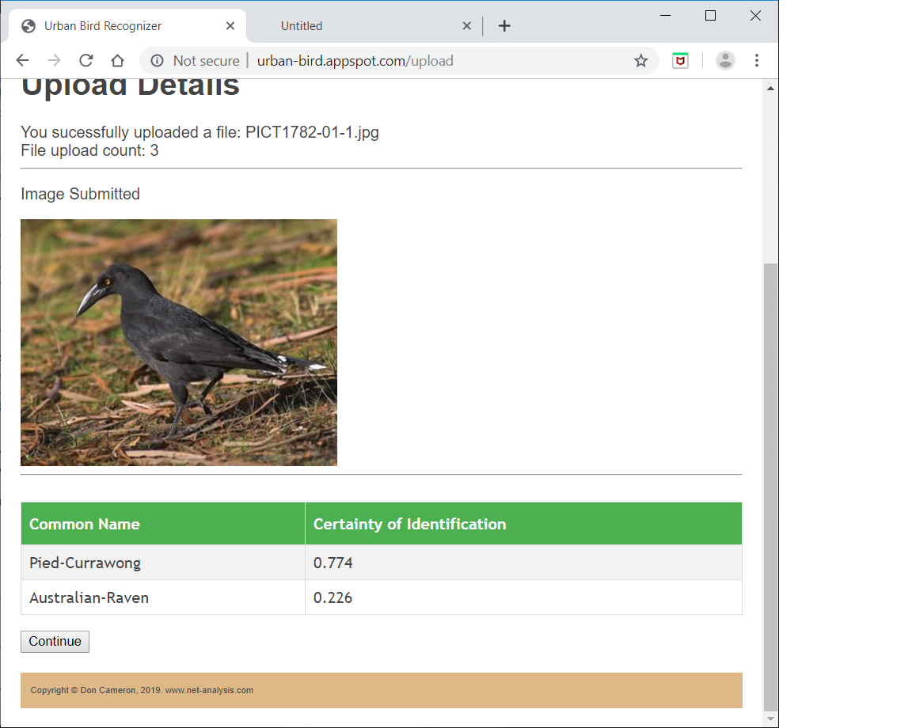
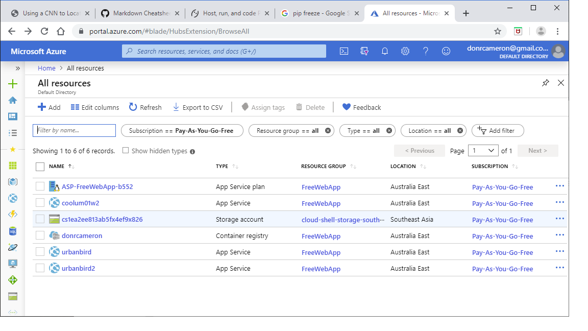
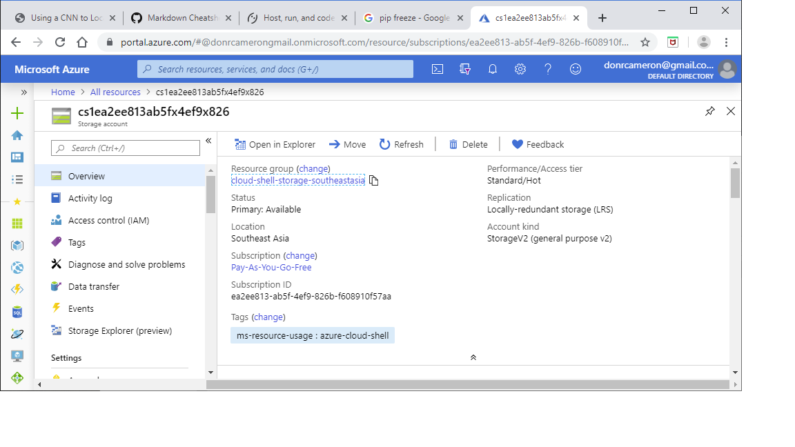
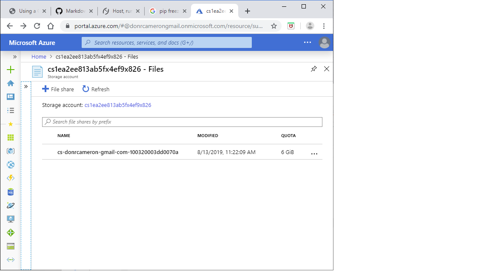
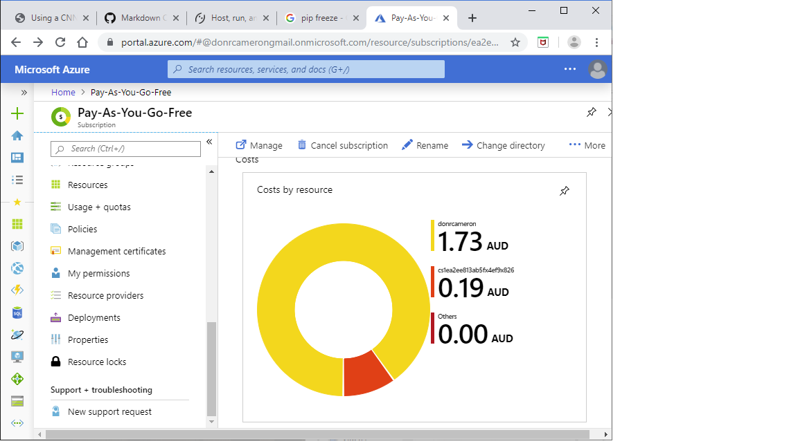
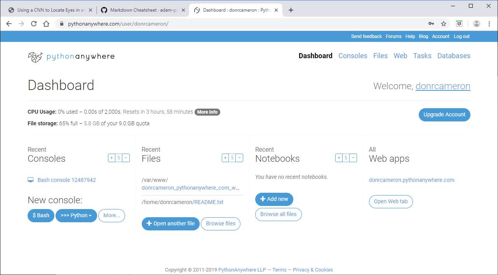
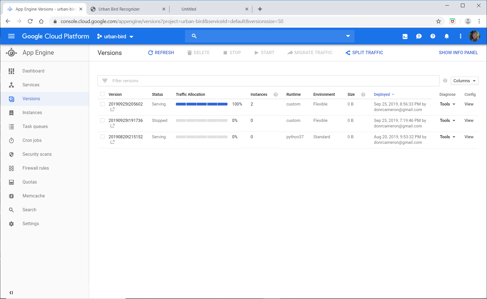
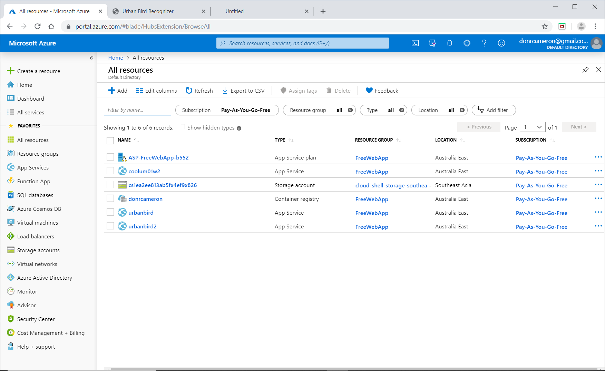
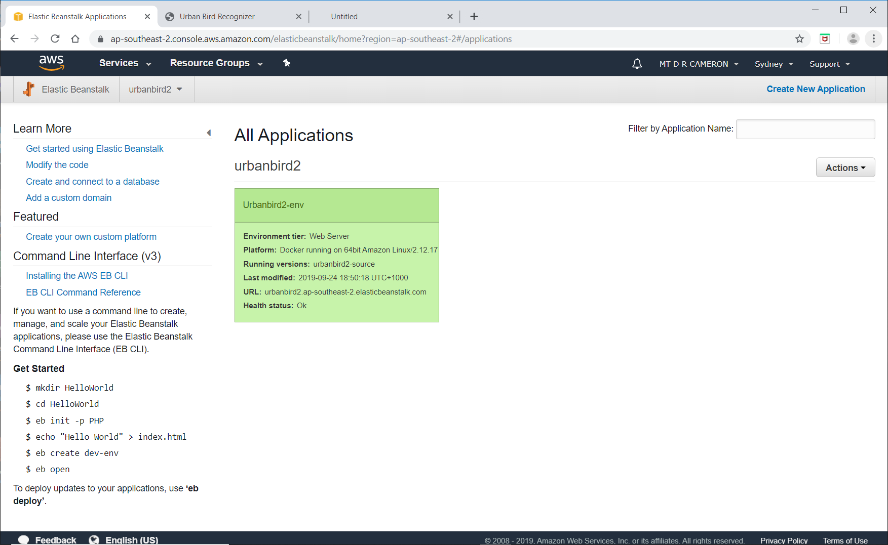

Adventures in Cloudland
Introduction
As described in previous blog posts, lately I have been dipping my toe into Machine Learning (ML). This blog post will be a high level overview of my attempts to host a large ML web app on four different cloud providers. Not much code in this blog post, but a description of the gotchas on the way.
Background
The fastai Machine Learning course I can strongly recommend: fastai course, version 3. The good people at the Coding from Beach Meetup Coding from Beach organized a set of workshops, for interested people to work through the video lectures as a group.
As an exercise, I replicated one of the examples in the course, where you present an image, and a Convolutional Neural Network (CNN) outputs the likelihood / certainty / probability that the image contains one of a set of pre-defined objects. The course example categories were breeds of cat; I decided to develop a recognizer for the Australian Museum 30 most common urban birds.
To train a CNN, you need a large number of pre-labelled images. Thanks to Google Image search, I was able to get large numbers of images for each bird species. Large amounts of CNN training later, and a rapid learning uptake (mostly via StackOverflow) of my Python web-backend of choice (Flask), I got an web app that could be very confident when given a photo of a Rainbow Lorikeet.

But, like me, was a little less sure about black birds.

Vanity of vanities! All is vanity
I was inordinately proud of this web app, and immediately thought about web hosting. Being a cheap bastard, I wanted to do it for as close as possible for free.
There was a recommendation on the reddit Python forum for a hosting / cloud company called PythonAnywhere.
PythonAnywhere
I can strongly recommend them for vanilla-flavour Python-based web app hosting. The main reasons are:
-
They required me to learn very little new technology. Essentially I was given a Linux command line, and an upload button.
-
I rapidly learnt that my dreams for "Free!" were just that: dreams. ML web apps (or at least my fastai ML web app) are not small. The CNN model is about 100 MB, and the
pytorchlibraries run to 700 MB. I suspect thatpytorchcomes with lots of example databases; it is a pity there isn't a pytorch-lite, just for executing trained models. PythonAnywhere allowed me to scale up my subscription to just fit the required disk and memory sizes I needed.
I had a couple of happy little mistakes along the way (as Bob Ross would say). I initially decide to replicate exactly my development environment by running pip freeze on my dev machine, and pip -f on the host machine. This it turned out was foolish, because I develop under Windows, and deploy to Linux. I fixed this by using a requirements.txt file that just specified package names (and not versions), except for the fastai and pytorch versions I needed.
Cloud Giants
So then I set my sights on the giants of the Cloud, Microsoft Azure and Google Cloud. Again (being a cheap bastard), I cranked up free accounts on both. Again, I learned that my app was too large for this.
Both Azure and Google know about Python 3 (although Google internally uses Python 2 - spit), and taking an app from a Git repository, but the process of running up the environment (via PIP) always fell over in both providers with memory (or maybe disk limitations). I could have moved to more expansive (read expensive) accounts, but decided against this, as I had heard horror stories of unexpected Cloud bills, due to some mis-configuration by the end-user.
As an example of unexpected consequences, at one stage Azure offered me the option to crank up a Azure Cloud Shell (CLI), which I activated. Later I noticed in the Azure console that I had a storage account.

Where did that come from, I wondered: from my request for a Cloud Shell was the answer.

I wonder how big this storage is, I wondered: could be quiet large I found - 6 GB is quite large by my standards.

Fortunately, the costs are not high (yet)

Plan B
So at this stage, I decided it was time to learn some new technology (maybe way past time). Both Google Cloud, Amazon Web Services (AWS) and Microsoft Azure know about Docker images, and running them up as a web server.
Onwards to Docker
Setting up a Docker image was relatively straight forward, but again there some glitches. I chose the python:3.7-slim base image from Docker, and then discovered that the install process of pytorch needed some C libraries to be complied. This then needed some C .h files to be installed. Oh, and there was no C compiler, so that had to be installed as well.
My Dockerfile looks like:
# get python
FROM python:3.7-slim
# set working directory to /app
WORKDIR /app
# copy current directory to container at /app
COPY . /app
# install gcc
RUN apt-get update -y
RUN apt-get install -y --no-install-recommends gcc
RUN apt-get install -y libc-dev
# install packages
RUN pip install --trusted-host pypi.python.org -r requirements.txt
# make port 80 avaiable
EXPOSE 80
# run app.py inside container on launch
CMD ["python", "app.py"]
My requirements.txt file looks like:
flask==1.0.2
flask-wtf
werkzeug>=0.15.3
fastai>=1.0.52
#
torch
Note the werkzeug>=0.15.3: Github complains if you use a lower version, due to security issues.
Now I suspect that I should have started with the pytorch base image, but "I am in blood Stepped in so far that should I wade no more. Returning were as tedious as go o'er.". I got something that worked.
Docker Deployment
From here on, it was pretty smooth: both Google Cloud and Microsoft Azure know about taking a Docker image, and running it up. Both Google and Microsoft have their own Docker image repositories, AWS is happy to take your image from DockerHub.
Again some gotchas:
- Google requires you to use port 8080
- Google requires a
app.yamlfile - AWS requires a
Dockerrun.aws.jsonfile to describe the deployment
I had some problem with my AWS account in getting to use Elastic Beanstalk (maybe because my account is a very old retail amazon.com account), but the support from AWS was first rate. They actually rang me from the USA to help me out!
App Management
As a matter of interest, the screenshots below show the management consoles for all the providers.
PythonAnywhere

Google Cloud

Azure

AWS

Conclusions
Some random thoughts:
. Having initially tripped over in developing on a different OS than my deployment OS, I have a new-found respect for Docker. It is definitely a technology you should at least a nodding acquaintance with.
. PythonAnywhere would be my recommendation for web app deployment of small to medium apps. I haven't done a detailed cost analysis, but the fact you don't have to learn a mountain of new jargon is a plus. Using any of the other Cloud providers for production would require learning a whole new jargon and set of concepts.
. My experience in this event, and previous interactions with Amazon, is that AWS support is very good, and this would maybe be the deciding factor if I had to do this for real.
. A quote that I suspect is uncomfortably true; "Nobody has figured out how to make money from AI/ML, other than by selling you a pile of compute and storage for your AI/ML misadventures".
Comment